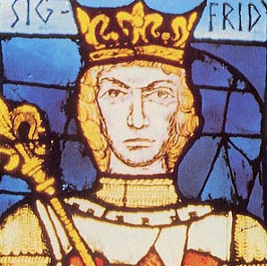

261633584188 Greve Bernard (Benno) von Northeim
* omkring 990
† mellan 1045 och 1047
Greve av Hessagau
Blev ca 56 år
* omkring 990
† mellan 1045 och 1047
Greve av Hessagau
Blev ca 56 år
523267168376 Greve Siegfrid I von Northeim
* omkring 965 Hanover, Niedersachsen, Tyskland
† omkring 1004 Northeim, Tyskland
Greve av Northeim
Blev ca 39 år
* omkring 965 Hanover, Niedersachsen, Tyskland
† omkring 1004 Northeim, Tyskland
Greve av Northeim
Blev ca 39 år

1046534336752 Greve Siegfrid I von Luxenburg
* mellan 919 och 922 Verdun, Frankrike
† 998 Triere, Rheinland-Pfalz, Tyskland
Greve av Ardennerna + Luxenburg
Blev högst 79 år
* mellan 919 och 922 Verdun, Frankrike
† 998 Triere, Rheinland-Pfalz, Tyskland
Greve av Ardennerna + Luxenburg
Blev högst 79 år
2093068673504 Greve Wigeric von Lothringen
* omkring 890 Frankrike
† 939 Echternach, Rhenlandet, Preussen
Greve av Hainault, Hertig av Lothringen
Blev ca 49 år
* omkring 890 Frankrike
† 939 Echternach, Rhenlandet, Preussen
Greve av Hainault, Hertig av Lothringen
Blev ca 49 år

2093068673505 Grevinna Cunigunde of France
* omkring 895 Aachen, Cologne, Tyskland
† mellan 930 och 940 Aachen, Cologne, Tyskland
Grevinna av Trier & Ardennerna
Blev ca 44 år
* omkring 895 Aachen, Cologne, Tyskland
† mellan 930 och 940 Aachen, Cologne, Tyskland
Grevinna av Trier & Ardennerna
Blev ca 44 år
1046534336753 Grevinnan Hedwig von Nordgau
* 937 Nordgau, Östfranken
† 992 St. Maximin-klostret, Trier, Lothringen, Tyskland
Grevinna av Luxenburg
Blev högst 55 år
* 937 Nordgau, Östfranken
† 992 St. Maximin-klostret, Trier, Lothringen, Tyskland
Grevinna av Luxenburg
Blev högst 55 år
523267168377 Mathilde von Katlenburg
* 970 Tyskland
† omkring 1002 Northeim, Tyskland
Blev ca 32 år
* 970 Tyskland
† omkring 1002 Northeim, Tyskland
Blev ca 32 år